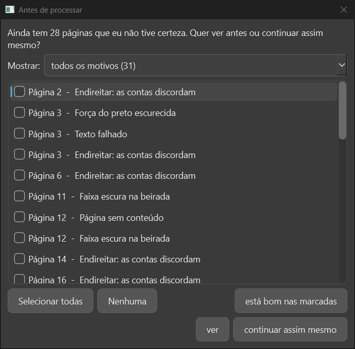
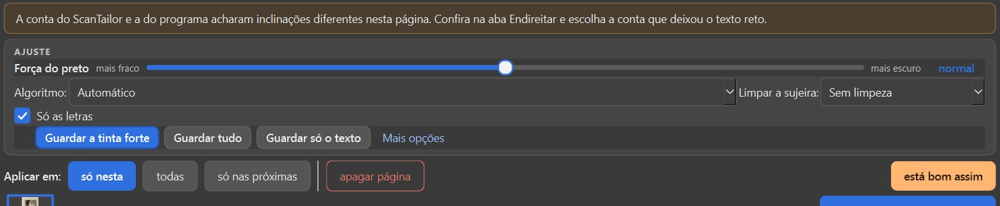
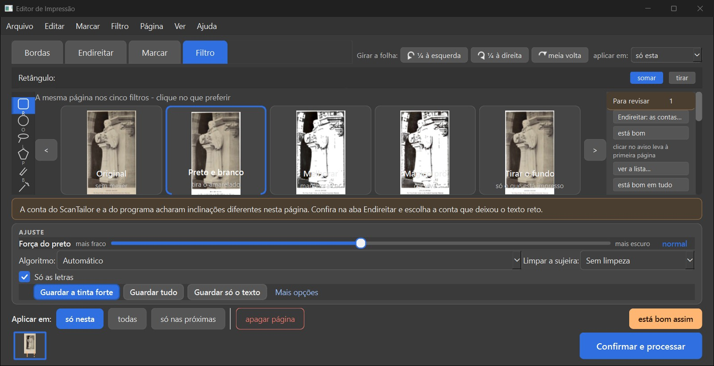

Verificador. Ramo fase2-para-revisar, commit 36b9e32, em livro novo (endireitar antes de cortar). Pilotei a janela de verdade com mouse e teclado nativos, em 1280 x 657, com pasta de dados de teste. Não mudei código e não marco nada como aprovado.
PRONTO PARA CONFERIR, com duas ressalvas graves: os seis pedaços funcionam na janela, mas a tela mostra a letra que o PDF vai apagar (quem confere pelo olho dá "está bom" numa página que sai errada), e na janela a regra não decide igual à conferência das 89 páginas.
O programa passa a avisar, página por página, quando o "Só as letras" do Preto e branco pode ter estragado alguma coisa: um desenho ou letra grande que sumiu, texto que saiu falhado, página que não tem nada do livro. Cada aviso traz o botão do conserto: "Trazer de volta nesta página", "Deixar em branco", "Tirar do livro", "Desfazer".
Quando o texto sai falhado, o programa escurece sozinho a força do preto só naquela página e avisa (dá para desfazer, e há uma caixinha para desligar isso na tela "O que fazer"). Ao clicar em "Confirmar e processar" com avisos sem olhar, aparece a lista "Página N - motivo", com "ver" e "continuar assim mesmo".
O Kaique pode dizer "está bom" numa página, num motivo de uma página, num motivo em todas as páginas ou em tudo, e o Ctrl+Z desfaz cada um. Na janela de verdade os seis pedaços funcionaram e o livro foi processado até "Ficou pronto!" três vezes, sem erro.
| O que | Como | Resultado |
|---|---|---|
| 1. Regra ajustada (quando a página vai para a lista) | janela + máquina | Funciona, com ressalva grave: na janela 24 vão e 73 certas nas 89 páginas (implementador: 22 e 75). |
| 2. "Parece em branco" e "Página sem conteúdo" separados, dois botões cada | janela | Funciona. Falta "está bom assim" nesses dois avisos. |
| 3. "Trazer de volta nesta página", com o lugar marcado em laranja | janela + olho | Funciona. A tela mostra a letra que o PDF apaga. |
| 4. Força do preto sozinha, com "Desfazer" e caixinha | janela | Funciona. No Palatino 66 escureceu sem precisar. |
| 5. Janela "Antes de processar" com "ver" e "continuar assim mesmo" | janela | Funciona. A lista fica longa e mistura avisos. |
| 6. "Está bom" em cada nível, com Ctrl+Z; o aviso some quando se resolve | janela | Funciona nos quatro níveis e na lista grande. |
| Processar até "Ficou pronto!" (3 vezes) | janela + máquina | 6 páginas no PDF nas três; 5 s, 2 s e 6 s; erros.log vazio. |
| As quatro páginas que o implementador não olhou | olho, na janela | Cursus 3: aviso certo (o corte deixa faixa). Opus Majus 20: não foi. Palatino 66: foi sem precisar. Antiphon 260: escapa. |
| Lista com poucas páginas visitadas (ressalva 2) | janela | Confirmado: 2 visitadas, 2 avisos; mais 4 visitadas, 4 avisos. |
| Projeto feito antes da mudança | janela | Abre, o aviso antigo some, a força sozinha vem desligada. |
| Botões escondidos acionados pelo teclado | janela | Não achei atalho; o Tab não chega a botão escondido. Não conferi com a janela ativa. |
| Velocidade (Marial de 300 folhas, 2 rodadas de cada, alternadas) | máquina | Não dá para dizer que ficou mais lento: as diferenças são menores que o vai-e-vem entre rodadas iguais. O teste não liga o "Só as letras". |
O que olhar: O aviso laranja, o quadradinho laranja em volta da letra T nos cartões e o botão "Trazer de volta nesta página".
O aviso aparece sozinho uns 8 segundos depois de chegar na página, com o lugar marcado em laranja. O botão troca só essa página para "Guardar tudo", o aviso some e a página sai da lista. O Ctrl+Z desfaz.
Ressalva: Em 1280 x 657 os cartões são pequenos: a marca laranja quase não se vê e o nome do filtro fica escrito por cima da miniatura. No tamanho de maximizada aparece bem. Repare que no cartão a letra T continua lá: é o defeito do quadro seguinte.
A marca laranja em volta da letra T nos cartões (ampliado, janela no tamanho de maximizada)

Os cinco cartões, o aviso e os dois botões

A tela inteira no tamanho de janela maximizada (1920 x 1020), página 46 de 298

A mesma tela em 1280 x 657: os cartões ficam pequenos e o nome do filtro fica por cima da miniatura

Depois de "Trazer de volta nesta página": "Guardar tudo" ligado, aviso e marca sumiram

Depois do Ctrl+Z: o aviso e os botões voltaram
O que olhar: A letra T grande à esquerda: na tela ela aparece; na página do PDF que saiu, não.
O aviso diz a verdade, a tela não. A página que aparece na tela é desenhada pequena, e nesse tamanho a letra T fica. O PDF é desenhado grande, e nele a letra some. Processei o livro na janela: no PDF a letra T sumiu mesmo.
Ressalva: Quem confere olhando a tela vê a letra no lugar e clica "está bom assim". Enquanto a tela não mostrar o que sai no PDF, o aviso manda olhar uma coisa que não dá para ver. Já era assim antes desta mudança; ela só deixou à vista.

O mesmo pedaço da página 46: à esquerda o "Ver de perto" da janela; à direita o PDF que o programa gerou

O "Ver de perto" inteiro, com o aviso de pé: a letra T está lá

A página inteira tirada do PDF gerado pela janela: no lugar da letra T sobrou um tracinho
O que olhar: O cartão do Preto e branco sem as pautas, a marca laranja na página inteira e o botão "Trazer de volta nesta página".
No jeito de fábrica ("Guardar a tinta forte") a página 222 não tem aviso nenhum. Trocando para "Guardar só o texto", o aviso aparece e o botão devolve só essa página para "Guardar a tinta forte". As outras páginas não mudam.
Ressalva: Usei um pedaço de 7 páginas do Graduale (219 a 225), para não abrir as 750 folhas. Na janela a página se chama 4.

O aviso do "Guardar só o texto", com a marca laranja (ampliado)

A tela inteira

Depois do botão: a música voltou e o aviso sumiu
O que olhar: Os dois botões, "Deixar em branco" e "Tirar do livro", e o que cada um faz com a página.
"Deixar em branco" põe uma folha branca no lugar: o livro continua com 138 páginas. "Tirar do livro" apaga a página: ficam 137. Os dois voltam com Ctrl+Z, e depois de "Deixar em branco" aparece o botão "voltar a página".
Ressalva: Esse aviso não tem "está bom assim". Quem quiser a página como está só consegue pelo painel, pela lista ou pela barra de espaço.

Egenloff 12: o aviso e os dois botões (ampliado)

A tela inteira

Depois de "Deixar em branco": folha branca no lugar e botão "voltar a página"

Depois de "Tirar do livro": a página 12 fica apagada na tira e o botão vira "restaurar página"

Rariora 8: o mesmo aviso, com os dois botões
O que olhar: A página tem o título "DA ORAÇÃO" e mesmo assim o programa pergunta se quer deixar em branco ou tirar do livro.
Os dois avisos ficaram separados, como o Samuel pediu, e cada um tem os dois botões. O erro da Gladstone 18 continua igual: já está na Lista de bugs e não fazia parte deste trabalho.
Ressalva: Agora o aviso errado vem com o botão "Tirar do livro" ao lado e sem "está bom assim". Um clique distraído tira do livro uma página que tem título.

Gladstone 18: o aviso "Parece em branco" e os dois botões (ampliado)

A tela inteira

A página de perto: tem o título "DA ORAÇÃO"
O que olhar: O medidor em "bem forte", o aviso "escureci a força do preto só nela" e o botão "Desfazer".
O programa leva a força do preto de 50 para 85 só nessa página e avisa. "Desfazer" devolve para 50 e aí aparece o aviso "Texto falhado" com "usar mais escuro"; o Ctrl+Z refaz. No Egenloff 3 a força não resolve o vermelho e os dois avisos ficam juntos. A caixinha fica na tela "O que fazer" e vem ligada no livro novo.
Ressalva: A caixinha só aparece depois de rolar a lista de opções para baixo. No Camões 104 a força mais escura trouxe dois avisos novos (desenho apagado e figura além da gravura).

Camões 27: o aviso, o medidor em "bem forte" e o "Desfazer" (ampliado)

A tela inteira

Depois do "Desfazer": força normal e o aviso "Texto falhado"

Egenloff 3: aviso 1 de 3 desta página

A caixinha "Escurecer sozinho a força do preto quando o texto sair falhado"

A tela "O que fazer" inteira
O que olhar: As linhas "Página N - motivo", e os botões "ver" e "continuar assim mesmo".
"ver" leva à página e não processa. "continuar assim mesmo" segue para escolher a pasta e processa até "Ficou pronto!". Fechar no X não processa. O PDF saiu com as 6 páginas em 5 segundos e o erros.log ficou vazio.
Ressalva: A lista junta os avisos novos com os de sempre. No Camões são 105 linhas: 59 de qualidade baixa, 35 do endireitar, e só 5 da regra nova. A frase de cima diz "100 páginas" e o painel ao lado diz 40. Logo depois, a janela de salvar diz "6 páginas que você não conferiu", outra conta.

Egenloff: 31 linhas, uma por motivo de cada página

Depois de "ver": o programa foi para a página do aviso e não processou

Camões: 105 linhas; as da regra nova ficam perdidas no meio

Depois de "continuar assim mesmo": a janela de salvar

"Ficou pronto!": 6 páginas
O que olhar: O número do painel "Para revisar" e o contador de páginas descendo em cada nível.
Um motivo de uma página: de 31 para 30 avisos, e o aviso seguinte da página aparece. Um motivo em todas: de 31 para 6. Em tudo: "tudo certo". Na lista grande, marquei duas linhas e dei "está bom nas marcadas": de 31 para 29. O Ctrl+Z desfez cada um.
Ressalva: Os botões "ver a lista…" e "está bom em tudo" ficam no fim do painel e só aparecem rolando a coluna da direita.

Egenloff 3 depois de "está bom assim" no primeiro aviso: agora mostra o segundo (aviso 1 de 2)

Depois de "está bom: todas" no motivo do endireitar: sobram 4 páginas

Depois de "está bom em tudo": nenhuma página marcada na tira

A lista grande com duas linhas marcadas
O que olhar: O aviso "Desenho apagado" e as marcas laranja na beirada esquerda, onde não sumiu desenho nenhum.
O implementador mediu cada página direto no tamanho do PDF. Na janela, a página pequena da tela é desenhada antes, e isso muda a medida que vem depois. Refiz as 89 páginas na ordem da janela: 4 mudam de decisão e 3 mudam de motivo.
Ressalva: Na ordem da janela: 24 vão, 73 certas (implementador: 22 e 75; combinado com o Samuel: 21 e 78). Passam a ir sem precisar o Graduale 221, a Matemática 72 e o Palatino 113; o Opus Majus 20 deixa de ir. Medi com a força sozinha desligada, como ele.

Graduale 221 na janela: "Desenho apagado", com a marca na beirada esquerda (ampliado)

A tela inteira (página 3 do pedaço de 7 páginas)
O que olhar: A faixa preta larga à direita da página e a linha preta à esquerda.
O aviso faz sentido para quem olha: a página sai com uma faixa preta larga. O que está errado é o corte do livro novo, que deixa a faixa; no corte de antes ela não sobrava. O aviso só conta o que o corte fez.
Ressalva: É defeito do corte do livro novo, não do aviso. Vale a gerente olhar junto do item do corte.

A página 3 como sai em Preto e branco, de perto

O aviso "Faixa escura na beirada"

A tela inteira
O que olhar: A foto da estátua fica inteira, como no original.
Pelos números do implementador ela passaria a ir ("figura além da gravura"). Na janela não foi: só apareceu o aviso do endireitar, que não é deste trabalho. A página está boa e não precisava ir.
Ressalva: É mais um caso em que a janela decide diferente da conferência das 89 páginas (aqui, para melhor). Abri a página sozinha, do gabarito; o livro inteiro não está no acervo.

A página como sai, de perto: a foto ficou intacta

O único aviso é o do endireitar

A tela inteira
O que olhar: Os pontinhos pretos em volta da moldura e as letras de traço fino.
O programa achou o texto falhado, escureceu a força do preto e avisou. Para quem olha, o aviso se entende, mas a página não precisava: é uma página de caligrafia, de traço fino de propósito, e a força mais escura sujou a moldura.
Ressalva: Aqui a força sozinha mexeu numa página que estava boa. Com o "Desfazer" volta ao normal.

A página 66 com a força escurecida, de perto

O aviso e o "Desfazer"

A tela inteira
O que olhar: A iluminura no meio da página saiu chapada em preto e branco, e há uma faixa preta larga embaixo.
Na primeira visita apareceu o aviso da faixa escura. Depois de visitar mais três páginas, a faixa virou aviso do livro e a página 260 ficou sem aviso nenhum da regra. A iluminura estragada, que era o motivo de ela ir, ninguém avisa.
Ressalva: O aviso da faixa aparece e some conforme a pessoa visita outras páginas (vira aviso do livro quando 70% das páginas medidas têm faixa). No Antiphon cada página levou de 20 a 26 segundos para ser medida.

A página 260 como sai em Preto e branco, de perto

Depois de visitar outras páginas: só o aviso do endireitar

A tela inteira: a faixa virou frase do livro, no alto do painel (meio encoberta pelo título do painel)
O que olhar: O aviso desta página é só o do endireitar. Não há aviso das linhas pretas, nem na página nem no livro.
O Samuel decidiu que basta um aviso no livro. Ele não aparece no Camões: nas 5 páginas que visitei o programa não contou faixa em nenhuma, porque as linhas são finas. As linhas continuam saindo no resultado.
Ressalva: O plano já diz que isso depende do corte (item 2.13). Fica registrado que hoje o Camões não recebe aviso nenhum disso.

Camões 66: o único aviso é o do endireitar (ampliado)

A tela inteira
O que olhar: No ramo, a página 3 mostra "Texto falhado" com a força em "normal": o programa não escureceu sozinho.
Criei um projeto no programa de hoje, com o aviso antigo "Tinta forte fora do texto" em 8 páginas, fechei e abri no ramo. Abriu em 7 segundos, o aviso antigo sumiu sozinho, a força do preto sozinha veio desligada e o erros.log ficou vazio.
Ressalva: É um projeto de hoje (já com o endireitar antes de cortar). Não abri um projeto de antes de 09/10, porque esses só existem na pasta de dados de verdade do Samuel.

No programa de hoje, página 12: o aviso antigo "Tinta forte fora do texto"

O mesmo projeto no ramo, página 12: o aviso antigo sumiu e, depois de medir, veio "Página sem conteúdo"

No ramo, página 3: "Texto falhado", força normal, botão "usar mais escuro"

A tela inteira
O que você está escolhendo: em que hora o programa confere as páginas que ninguém abriu. Hoje ele só confere a página que está na tela. As outras só são conferidas na hora de gerar o PDF, quando já não dá para parar.
Por isso a lista "Antes de processar" só mostra as páginas que você visitou. No Antiphonal de 298 páginas, com 2 visitadas, a lista mostrou 2 avisos de desenho apagado; visitei mais 4 e ela passou a mostrar 4. E a força do preto sozinha pode escurecer uma página que ninguém viu.
Conferir uma página custa tempo: na janela, de 4 a 11 segundos nos livros comuns e de 20 a 26 segundos no Antiphon, de folha grande. O implementador mediu, sem a tela, de 13 a 15 minutos para um livro de 300 páginas.
Sugestão do verificador (é minha, não é decisão): "Medir o livro inteiro por trás, depois de abrir", com uma barra de andamento. É a única em que a lista está completa na hora em que o Kaique decide, e a espera acontece enquanto ele já está conferindo.

Marial de 300 folhas, o programa de hoje (fase-1, 88d7ff2) contra o ramo (36b9e32), alternando, 2 rodadas de cada. Cada número é o valor do meio das 3 repetições da rodada. O teste não liga o "Só as letras": ele confere que o resto do programa não ficou mais lento; o custo novo (medir a página visitada) não entra nele.
| Rodada | Hora | Memória livre | Processador | Outros Python | Abrir | Trocar (média) | Trocar (pior) | Mágico pro, 10 pág. | Preto e branco, 10 pág. | Memória máxima | Durou |
|---|---|---|---|---|---|---|---|---|---|---|---|
| antes-1 (88d7ff2) | 04:08 | 6,29 GB | 3% | 0 | 50,0 s | 2,12 s | 3,21 s | 50,3 s | 23,5 s | 1382 MB | 10,7 min |
| depois-1 (36b9e32) | 04:19 | 6,33 GB | 2% | 0 | 50,6 s | 2,13 s | 3,21 s | 50,6 s | 23,5 s | 1378 MB | 10,8 min |
| antes-2 (88d7ff2) | 04:30 | 6,25 GB | 0% | 0 | 50,5 s | 2,13 s | 3,17 s | 50,3 s | 23,5 s | 1375 MB | 10,8 min |
| depois-2 (36b9e32) | 04:41 | 5,99 GB | 2% | 0 | 50,6 s | 2,11 s | 3,23 s | 50,4 s | 23,5 s | 1374 MB | 10,7 min |
| Medida | Antes | Depois | Diferença | Vai-e-vem do antes | Vai-e-vem do depois | Par a par (depois menos antes) | Dá para dizer? |
|---|---|---|---|---|---|---|---|
| Abrir o livro (300 folhas) | 50,2 s | 50,6 s | +0,3 s (+0,7%) | 0,6 s | 0,0 s | +0,6; +0,0 s | não dá para dizer (diferença menor que o vai-e-vem entre rodadas iguais) |
| Trocar de página (média de 20) | 2,13 s | 2,12 s | -0,01 s (-0,2%) | 0,02 s | 0,02 s | +0,01; -0,02 s | não dá para dizer (diferença menor que o vai-e-vem entre rodadas iguais) |
| Trocar de página (a pior das 20) | 3,19 s | 3,22 s | +0,03 s (+0,8%) | 0,04 s | 0,02 s | -0,01; +0,06 s | não dá para dizer (diferença menor que o vai-e-vem entre rodadas iguais) |
| Processar 10 páginas em Mágico pro | 50,3 s | 50,5 s | +0,2 s (+0,5%) | 0,0 s | 0,2 s | +0,4; +0,1 s | não dá para dizer (diferença menor que o vai-e-vem entre rodadas iguais) |
| Processar 10 páginas em Preto e branco | 23,5 s | 23,5 s | +0,0 s (+0,0%) | 0,1 s | 0,0 s | +0,0; -0,0 s | não dá para dizer (diferença menor que o vai-e-vem entre rodadas iguais) |
Tempos da medida na janela (do clique na página até a medida chegar, já descontada a espera do meu roteiro): Camões 4 a 5 s; Gladstone 4 a 6 s; Antiphonal 6 a 7 s; Egenloff e Palatino 7 a 10 s; Rariora 11 s; Antiphon 20 a 26 s.
| Data | Bug | |
|---|---|---|
| 13/10/2026 | A tela mostra o que o PDF não tem: no "Só as letras", a página da tela (e do "Ver de perto") é desenhada pequena e mostra a letra T do Antiphonal 46; no PDF a letra some. O aviso está certo, mas não dá para conferir pelo olho. | img/tela-engana-1-comparacao.jpg |
| 13/10/2026 | A medida do "Para revisar" muda quando a prévia da tela foi desenhada antes (é sempre o caso na janela). Nas 89 páginas, na ordem da janela: 24 vão e 73 certas, contra 22 e 75 medindo direto. Mudam Graduale 221, Matemática 72, Palatino 113 (passam a ir) e Opus Majus 20 (deixa de ir). | img/janela-diferente-1-graduale-221-recorte.jpg |
| 13/10/2026 | Dois cliques no cartão do filtro (o jeito de abrir o "Ver de perto") gravam "Filtro da página: Preto e branco para Preto e branco", a página fica como conferida e o aviso some. O Ctrl+Z desfaz. Pelo duplo clique na miniatura da tira não acontece. | img/bug-duplo-clique-tira-o-aviso-tela.jpg |
| 13/10/2026 | Os avisos "Parece em branco" e "Página sem conteúdo" não têm "está bom assim": só "Deixar em branco" e "Tirar do livro". Na Gladstone 18, que tem título, o aviso errado só oferece essas duas saídas. | img/parece-em-branco-1-recorte.jpg |
| 13/10/2026 | A lista "Antes de processar" mistura os avisos da regra com os de sempre (Camões: 105 linhas, 5 da regra). A frase diz "100 páginas", o painel diz 40, e a janela de salvar, logo depois, diz "6 páginas que você não conferiu". | img/antes-3-lista-camoes.jpg |
| 13/10/2026 | Depois de clicar num botão do aviso, o teclado fica nesse botão: a seta para a direita não troca de página (pula para outro botão) e a barra de espaço aperta o botão em que o foco parou, em vez de "está certo e avança". A tecla Tab nunca chega ao "próximo aviso": só anda pelos botões. | (sem print: está na saída dos roteiros p32 e p33) |
| 13/10/2026 | O corte do livro novo deixa uma faixa preta larga no Cursus 3 (no corte de antes não sobrava). O aviso "Faixa escura na beirada" está certo. | img/cursus-3-1-pagina-recorte.jpg |
| 13/10/2026 | Antiphon 260: a iluminura sai chapada em preto e branco e nenhum aviso fala disso; o aviso da faixa aparece na primeira visita e some quando vira aviso do livro. | img/antiphon-260-1-pagina-recorte.jpg |
| 13/10/2026 | Palatino 66: a força do preto sozinha escurece uma página de caligrafia que estava boa e suja a moldura. | img/palatino-66-1-pagina-recorte.jpg |
| 13/10/2026 | Pequenos: no Egenloff 3 o aviso "Texto falhado" oferece "usar mais escuro" com a força já no mais escuro que o botão põe; em 1280 x 657 o nome do filtro fica escrito por cima da miniatura dos cartões; a caixinha da força sozinha só aparece rolando a lista de opções. | img/esta-bom-1-um-motivo-recorte.jpg |
scripts/piloto.py, scripts/v.py); as leituras do estado só leem. Ida às páginas: arrastando a barra da tira de miniaturas e clicando na miniatura.trabalho/dados_teste (fora do git). A pasta de dados do Samuel não foi usada. O erros.log de teste ficou vazio em todas as sessões.scripts/desenhar.py e scripts/ver_pdf.py (a página na tela contra a do PDF), scripts/ordem_da_medida.py e scripts/conferir_89_como_a_janela.py (as 89 páginas na ordem da janela; resultado em conferir-89-como-a-janela.json), velocidade/ (as quatro rodadas).img/. Abri 41 uma a uma; as outras 17 são a tela inteira ou o recorte da mesma captura de uma que abri. Sete prints tinham saído com a imagem velha da janela (o primeiro print depois de abrir o programa); achei por máquina (scripts/achar_prints_velhos.py), refiz os que entram aqui e nenhum velho ficou em img/.36b9e32 do programa. O b5b224f (só o teste_botoes.py) não foi trazido: o programa é o mesmo.Editor de Impressão · gerado em 13/10/2026 às 05:07